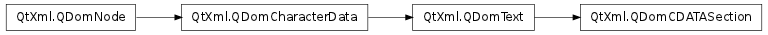

QDomCDATASection ¶

Detailed Description ¶
The PySide.QtXml.QDomCDATASection class represents an XML CDATA section.
CDATA sections are used to escape blocks of text containing characters that would otherwise be regarded as markup. The only delimiter that is recognized in a CDATA section is the “]]>” string that terminates the CDATA section. CDATA sections cannot be nested. Their primary purpose is for including material such as XML fragments, without needing to escape all the delimiters.
Adjacent PySide.QtXml.QDomCDATASection nodes are not merged by the QDomNode.normalize() function.
For further information about the Document Object Model see http://www.w3.org/TR/REC-DOM-Level-1/ and http://www.w3.org/TR/DOM-Level-2-Core/ . For a more general introduction of the DOM implementation see the PySide.QtXml.QDomDocument documentation.
- class PySide.QtXml. QDomCDATASection ¶
- class PySide.QtXml. QDomCDATASection ( x )
-
Parameters: x – PySide.QtXml.QDomCDATASection Constructs an empty CDATA section. To create a CDATA section with content, use the QDomDocument.createCDATASection() function.
Constructs a copy of x .
The data of the copy is shared (shallow copy): modifying one node will also change the other. If you want to make a deep copy, use PySide.QtXml.QDomNode.cloneNode() .